사회조사분석사-1급 (2020-09-26 기출문제)
1과목: 고급조사방법론 I
1. 질문지 구성 문항 중 가장 적절한 질문형식은?
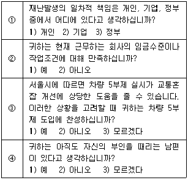
- ①
- ②
- ③
- ④
(정답률: 알수없음)

2. 실험설계의 내적·외적타당도의 저해요인과 그 영향에 대한 설명으로 틀린 것은?
- 우연한 사건(history) : 연구자의 의도와는 관계없이 어떤 사건이 발생하여 조사연구의 결과에 영향을 주는 것
- 통계적 회귀(statistical regression) : 사전검사에서의 극단적인 결과 점수가 사후검사에서도 지속되는 것
- 실험대상의 소멸(mortality) : 실험대상의 이탈로 인해 독립변수의 효과가 왜곡되는 것
- 시험효과(testing effect) : 처음의 측정 경험이 다음 측정에 영향을 주는 것
(정답률: 알수없음)
3. 다음 중 설문조사로 가장 해결하기 어려운 연구주제는?
- CCTV설치 여부와 범죄와의 관계
- 비행친구와 사귀는 것과 범죄와의 관계
- 실업률과 범죄율과의 관계
- 처벌의 두려움과 범죄와의 관계
(정답률: 알수없음)
4. 순수실험설계와 가장 거리가 먼 것은?
- 독립변수와 종속변수의 조작
- 조사대상의 무작위 추출
- 측정시기 통제
- 측정대상 통제
(정답률: 알수없음)
5. 질적 연구방법과 양적 연구방법을 통합하는 혼합연구(mixed method)에 관한 설명으로 옳은 것을 모두 고른 것은?
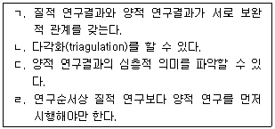
- ㄱ, ㄴ, ㄷ
- ㄱ, ㄷ
- ㄷ, ㄹ
- ㄱ, ㄴ, ㄷ, ㄹ
(정답률: 알수없음)
6. 질적 연구방법의 엄밀성(rigorousness)을 높이기 위한 방법과 가장 거리가 먼 것은?
- 다각적 방법(triangulation)의 활용
- 예외적인 사례의 분석
- 연구자와 연구대상 간의 공식적 관계 유지
- 연구대상을 통한 재확인
(정답률: 알수없음)
7. 연구문제의 선정에 있어서 옳지 않은 것은?
- 이론적으로 또는 실용적으로 가치가 있는 주제이어야 한다.
- 새롭고 참신한 문제를 제기하는 것이 좋다.
- 연구문제를 선정하고 문헌고찰을 한 후 연구가설을 제시하고 해결한다.
- 모든 연구에 있어서 가설 설정은 꼭 필요하다.
(정답률: 알수없음)
8. 종단연구에 관한 설명으로 옳지 않은 것은?
- 종단연구는 횡단연구에 비해 표본의 크기가 상대적으로 크다.
- 장기간의 연구시기를 필요로 한다.
- 패널연구와 동향연구가 대표적이다.
- 연구대상자의 특성과 조건이 연구기간 동안 같아야 한다.
(정답률: 알수없음)
9. 다음은 어떤 실험설계에 해당하는가?
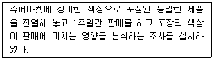
- 사전실험설계
- 순수실험설계
- 유사실험설계
- 사후실험설계
(정답률: 알수없음)
10. 내용분석법의 설명으로 틀린 것은?
- 연구중간에 연구수정이 용이하다.
- 이미 사망한 사람의 연구가 가능하다.
- 수량화작업이 불가능하다.
- 코딩(coding)하는 사람에 따라 내용에 대한 분석이 다를 수 있기 때문에 분석의 신뢰성에 문제가 발생할 수 있다.
(정답률: 알수없음)
11. 양적연구방법의 특징에 대한 설명으로 적절한 것은?
- 깊이 있는 이해 목적
- 새로운 현상의 연구목적
- 원인이 결과를 낳는지 입증하기 위한 연구
- 개별사례 연구
(정답률: 알수없음)
12. 보고서 작성 시 고려되어야 할 유의사항과 거리가 먼 것은?
- 데이터 분석의 정확성 여부
- 연구계획이 과학적 절차에 부합여부
- 신뢰도와 타당도의 검증된 적합한 도구의 사용 여부
- 확률표집방법의 활용여부
(정답률: 알수없음)
13. 인과관계 조사에 대한 설명으로 옳지 않은 것은?
- 한 사건의 영향으로 다른 사건이 발생하는 것을 의미한다.
- 인과관계의 추론은 과학적 방법으로 수집된 정보를 바탕으로 이루어지는 것이 바람직하다.
- 사회과학이란 원인과 결과간의 관계를 규명하는 활동이라 할 수 있다.
- 사회과학은 순환론적 인과관계를 규명하고자 한다.
(정답률: 알수없음)
14. 설문지의 보조 도구의 사용이 가장 제한적인 조사방법은?
- 전화조사
- 우편조사
- 집단조사
- 면접조사
(정답률: 알수없음)
15. 개방형질문을 사용하는 경우가 아닌 것은?
- 약물남용의 다양한 이용 동기를 알고 싶을 때
- 직업의 종류를 알고 싶을 때
- 무응답을 줄이려고 할 때
- 탐색조사를 할 때
(정답률: 알수없음)
16. 사후실험설계의 특징으로 틀린 것은?
- 가설의 실제적 가치 및 현실성을 높일 수 있다.
- 분석 및 해석에 있어 편파적이거나 근시안적 관점에서 벗어날 수 있다.
- 순수실험설계에 비하여 변수들 간의 인과관계를 명확히 밝힐 수 있다.
- 조사의 과정 및 결과가 객관적이며 조사를 위해 투입되는 시간 및 비용을 줄일 수 있다.
(정답률: 알수없음)
17. 참여관찰의 장점을 모두 고른 것은?
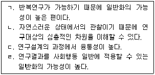
- ㄱ
- ㄱ, ㄹ
- ㄴ, ㄷ
- ㄴ, ㄷ, ㄹ
(정답률: 알수없음)
18. 관찰조사에서 자기 자신을 완전히 감추어 버리거나, 완전히 공개적으로 관찰하는 조사자의 참여수준은?
- 완전참여자
- 관찰자로서의 참여자
- 참여자로서의 관찰자
- 완전관찰자
(정답률: 알수없음)
19. 사례연구방법의 특징과 가장 거리가 먼 것은?
- 양적 연구
- 현상주의적 방법
- 전체적(holistic) 방법
- 맥락과 과정의 기술
(정답률: 알수없음)
20. 법칙정립적 인과관계의 판단기준과 거리가 먼 것은?
- 두 변수 사이에 상관관계가 있어야 한다.
- 시간적으로 원인이 결과에 우선하여 발생해야 한다.
- 예외를 발견함으로써 인과관계를 부정할 수 있다.
- 결과가 제3의 변수에 의해 설명되어서는 안 된다.
(정답률: 알수없음)
21. 질문지 설계에서 유의사항이 아닌 것은?
- 회수율의 고려
- 선도형 등의 유도형 질문회피
- 이중목적 질문의 사용으로 신뢰성 확보
- 사생활정보의 보호
(정답률: 알수없음)
22. 캐어묻기(probing)가 유용하게 사용될 수 있는 곳은?
- 우편조사
- 자동화된 전화조사
- 면접조사
- 온라인 조사
(정답률: 알수없음)
23. 다음 중 2차 자료(secondary data)가 아닌 것은?
- 정부가 발행한 통계연보에서 수집한 자료
- 신문에서 나온 것을 수집한 자료
- 은행 등의 기관에서 발행된 것을 수집한 자료
- 표본조사에서 수집된 자료
(정답률: 알수없음)
24. 존 스튜어트 밀(Mill)은 현상 또는 변인들간의 인과관계를 추론하기 위한 3가지 방법을 제안하였다. 다음 중 인과관계를 추론하기 위한 3가지 방법에 해당하지 않는 것은?
- 일치(agreement) 방법
- 일반화(generalization) 방법
- 차이(difference) 방법
- 동시변화(concomitant variation) 방법
(정답률: 알수없음)
25. 조사윤리에 관한 설명으로 옳지 않은 것은?
- 조사자는 응답자 등의 자료원을 보호해야 한다.
- 응답자에게 막연한 설명을 하면서 면접에 동의하도록 유도해서는 안 된다.
- 응답자에게 정신적 부담을 주어서는 안 된다.
- 응답자에게 도움이 된다면 어떤 자료를 수집해도 상관없다.
(정답률: 알수없음)
26. 가설이 되기 위한 조건이 아닌 것은?
- 검증될 수 있어야 한다.
- 구체적이고 분명해야 한다.
- 문제를 해결해줄 수 있어야 한다.
- 가치판단에 관한 것이어야 한다.
(정답률: 알수없음)
27. 다음은 보고서 내용의 일부이다. 이 연구의 분석단위는?
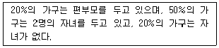
- 개인
- 집단
- 공식적 사회조직
- 사회적 가공물
(정답률: 알수없음)
28. 다음 중 질문의 응답범주에 대한 설명으로 적합한 것은?
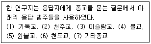
- 포괄적이면서 상호배타적이다.
- 포괄적이지 않지만 상호배타적이다.
- 포괄적이지만 상화배타적은 아니다.
- 포괄적이지도 상호배타적이지도 않다.
(정답률: 알수없음)
29. 온라인 조사의 최대 쟁점은?
- 표본의 대표성
- 복수응답의 가능성
- 유인요소
- 질무지 설계 및 작성
(정답률: 알수없음)
30. 사회적 변화를 개인 행위자 수준에서 파악하는데 가장 적합한 조사 방법은?
- 추세조사
- 패널조사
- 코호트조사
- 실험연구
(정답률: 알수없음)
2과목: 고급조사방법론 II
31. 소시오메트리 척도 사용과 가장 거리가 먼 것은?
- 시장조사
- 집단 내 사기
- 조직 내 권력 구조
- 사회적 적응 부조화
(정답률: 알수없음)
32. 다음 중 본격적인 조사작업을 실시하기 이전에 그 분야에 필요한 예비지식을 얻기 위한 기초조사라고 볼 수 없는 것은?
- 문헌조사
- 전문가 의견조사
- 사전검사
- 표본조사
(정답률: 알수없음)
33. 비율척도를 적용할 수 있는 측정대상에 해당하는 것은?
- 학교성적 석차
- 온도
- 주가지수
- 무게
(정답률: 알수없음)
34. 층화표집의 장점에 대한 설명으로 틀린 것은?
- 모집단의 특수성을 고려하기 때문에 표본의 편중을 줄일 수 있다.
- 단순무작위표집과 같은 표본의 무작위성이 확보되면서 불필요한 분산을 줄여준다.
- 모집단의 성격이 동질적이든 아니든 골고루 추출하기 위해 이용된다.
- 별도의 층화목록(stratified lists)이 없어도 이용할 수 있다.
(정답률: 알수없음)
35. 다음 중 비체계적 오차(random error)의 발생원인과 가장 거리가 먼 것은?
- 호손효과
- 표본의 대표성 결여
- 측정자의 가변성
- 피측정자의 지식결여
(정답률: 알수없음)
36. 설문지에서 혼인 경험을 묻는 문항에 대해서 혼인 경험이 전혀 없다고 응답한 응답자가 이후 문항에서 이혼 경험이 있다고 응답했을 경우 어떤 조치가 필요한 상황인가?
- 요효코드 클리닝
- 상황적 클리닝
- 사전부호화(edge) 코딩
- 직접(direct) 코딩
(정답률: 알수없음)
37. 한 연구자가 “신앙심”의 척도를 구성하였다. 이 측정에서는 응답자들이 종교의 중요성과 일상생활에서의 기도와 고백의 가치에 관한 질문에 답하도록 요구되었다. 다음 중 어느 것이 이 척도의 예측타당도를 가장 잘 검증해주는 기준 변인(criterion variable)이 될 수 있는가?
- 응답자들에게 그들이 진보적인지 보수적인지 묻는 것
- 응답자들이 교회예배에 얼마나 헌신적으로 참여하는 지를 묻는 것
- 응답자들이게 공립학교에서의 기도조직을 승인할 것인지의 여부를 묻는 것
- 응답자들이 자신들의 종파적 선호(기독교, 카톨릭, 불교 등)를 선택하도록 묻는 것
(정답률: 알수없음)
38. 표본의 크기를 결정하는 요소가 아닌 것은?
- 조사가설의 내용
- 연구자의 수
- 조사비용의 한도
- 모집단의 동질성
(정답률: 알수없음)
39. 다음 중 비확룔표집을 사용하는 경우와 가장 거리가 먼 것은?
- 모집단의 특서잉 매우 다양할 경우
- 모집단을 규정지을 수 없는 경우
- 표본오차가 큰 문제가 되지 않을 경우
- 본조사에 앞서 탐색적 연구가 필요할 경우
(정답률: 알수없음)
40. 다음 중에서 표본조사가 적합하지 않은 경우는?
- 라면 신제품 광고에 대한 인지도 조사
- 맥주회사들의 연간 평균 맥주생산량 조사
- 비표본오차(non-sampling error)를 최소화하려고 할 때
- 소비자물가지수를 위한 상품가격 조사
(정답률: 알수없음)
41. 정부의 한 부처에서 기본적인 업무 수행 능력이 우수한 사람들을 공직적격성 평가시험을 통해 공무원으로 선발하고자 한다. 이러한 시험에서 가장 중요하게 고려해야 할 것으로 짝지어진 것은?
- 예측타당도 - 내용타당도
- 기준관련 타당도 - 내적타당도
- 내용타당도 - 구성체타당도
- 예측타당도 – 기준관련 타당도
(정답률: 알수없음)
42. 체계적 오차의 주요 발생 원인에 해당되는 것은?
- 설문지 문항 수
- 사회적 바람직성
- 복잡한 응답절차
- 응답자의 기분
(정답률: 알수없음)
43. 신뢰성 측정방법인 반분법(split-half method)에 관한 설명으로 옳은 것은?
- 신뢰성 측정을 위해 두 개의 척도를 만들어야 한다.
- 어떻게 반분하느냐에 따라 상관계수가 달라질 수 있다.
- 첫 번째 조사가 두 번째 조사에 영향을 미칠 수 있다.
- 신뢰도가 낮을 경우 어떤 문항을 제거해야 할지 알 수 있다.
(정답률: 알수없음)
44. 척도에 관한 설명 중 틀린 것은?
- 단일문항보다 척도사용이 측정오류를 줄일 수 있다.
- 리커트 척도(Likert scale)는 명목척도로 널리 사용되고 있다.
- 거트만 척도(Guttman scale)는 단일차원적이며 동시에 누적적이다.
- 서스톤 척도(Thurstone scale)는 등간척도라 할 수 있다.
(정답률: 알수없음)
45. 처음에는 소수의 응답자들을 찾아내어 면접하고, 다음 단계에서는 이들이 소개한 사람들을 면접하는 방식으로 표본크기를 늘려가는 표본추출방법은?
- 편의표집
- 할당표집
- 군집표집
- 눈덩이표집
(정답률: 알수없음)
46. 크론바하 알파값(cronbach's alpha)으로 계산하는 신뢰성 측정유형은?
- 반분법(split-half method)
- 재검사법(test-trtest method)
- 복수양식법 parallel-forms technique)
- 내적일관성법(internal consistency method)
(정답률: 알수없음)
47. 다음 중 코딩 시 주의사항과 가장 거리가 먼 것은?
- 모든 항목을 숫자로 입력해야 분석이 용이하다.
- 무응답과 “모르겠다”의 구분을 명확히 해야 한다.
- 칸을 입력할 때 응답을 고려하여 넉넉하게 칸을 배정하는 것이 좋다.
- 자유형식보다 고정형식으로 코딩하는 것이 좋다.
(정답률: 알수없음)
48. 다음 중 군집표집(clster sampling)의 장점이 아닌 것은?
- 시간과 비용을 줄일 수 있다.
- 전체 모집단의 목록표(frame)를 작성할 필요가 없다.
- 선정된 각 군집(cluster)은 다른 조사의 표본으로도 사용될 수 있다.
- 군집간이 동질적이면 오차의 개입가능성이 낮아진다.
(정답률: 알수없음)
49. 측정오차에 관한 설명으로 틀린 것은?
- 측정오차에는 비체계적 오차와 체계적 오차가 있다.
- 비체계적 오차란 우연히 발생하는 오차이며 신뢰도와 관련된 오차이다.
- 체계적 오차란 편견이 개입된 경우로서 타당도와 관련된 오차이다.
- 행동과 연결되지 않는 바람직한 응답만 하려는 경우는 비체계적 오차에 해당된다.
(정답률: 알수없음)
50. 후보자 선호순위, 학교성적 석차 및 사회계층 등에 사용되며 중앙값으로 평균을 측정하는 척도는?
- 명목척도
- 서열척도
- 등간척도
- 비율척도
(정답률: 알수없음)
51. 다음은 무엇에 관한 설명인가?
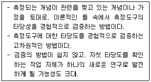
- 내용타당도
- 구성타당도
- 기준관련 타당도
- 예측타당도
(정답률: 알수없음)
52. 다음 사례에서 A 연구원이 고려하지 못한 타당성 저해요인은?
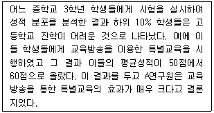
- 우연적 사건(history)
- 실험대상의 소멸(mortality)
- 통계적 회귀(statistical regression)
- 시험효과(testing effect)
(정답률: 알수없음)
53. 표본의 크기에 관한 설명으로 옳지 않은 것은?
- 표본의 크기가 커질수록 표본오차(sampling error)는 줄어든다.
- 잘 선정된 표본이라면 표본의 규모가 반드시 크지 않더라도 모집단을 효율적으로 대표할 수 있다.
- 모집단의 크기가 클수록, 그리고 모집단의 동질성이 강할수록 표본의 크기는 커져야 한다.
- 표본의 크기를 결정하는 데는 모집단의 크기, 표본 추출방법, 조사를 위해 활용 가능한 자원의 양 등이 고려되어야 한다.
(정답률: 알수없음)
54. 연속변수와 이산변수에 관한 설명으로 가장 적합한 것은?
- 연속변수는 사람·대상물 또는 사건을 그들 속성의 종류나 성질에 따라 분류하는 것이다.
- 이산변수는 측정한 값들이 척도상에서 무한대로 미분해도 가능하리만큼 연속성을 띤 것으로 거의 무한개의 값을 가질 수 있다.
- 가장 단순한 이산변수는 이분(dichotomous)변수로 단지 특정한 속성이 있느냐 없는냐에 따라 분류되는 것이다.
- 명목척도·서열척도는 연속변수와 관련되어 있다.
(정답률: 알수없음)
55. 1000명을 번호 순서대로 배열한 모집단에서 4번이 처음 무작위로 선정되고 9번, 14번, 19번, … 등이 차례로 체계적(systematic) 표집을 통해 선정되었다. 이 표집에서 표집간격( ㄱ )과 표본수( ㄴ )가 바르게 짝지어진 것은?
- ㄱ : 4, ㄴ : 200
- ㄱ : 4, ㄴ : 250
- ㄱ : 5, ㄴ : 200
- ㄱ : 5, ㄴ : 250
(정답률: 알수없음)
56. 측정의 수준과 그 예가 바르게 짝지어진 것은?
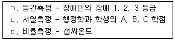
- ㄱ, ㄷ
- ㄴ
- ㄴ, ㄷ
- ㄱ, ㄴ, ㄷ
(정답률: 알수없음)
57. 한 연구자가 한국인의 식습관 조사를 위하여 각 가구의 주부를 면접하여 가구구성원들의 식습관에 대한 자료를 수집하였다. 이 연구에서 분석단위 – 관찰단위 – 표집단위는 각각 무엇인가?
- 주부 – 가구구성원 - 가구
- 가구구성원 – 주부 - 가구
- 가구 – 가구구성원 - 주부
- 가구 – 주부 – 가구구성원
(정답률: 알수없음)
58. 척도가 측정하고자 하는 개념 안에 포함된 모든 의미를 포괄하는 정도를 의미하는 것은?
- 동시타당도
- 판별타당도
- 집중타당도
- 내용타당도
(정답률: 알수없음)
59. 척도와 지수에 관한 설명으로 틀린 것은?
- 척도와 지수는 변수에 대한 서열측정이다.
- 척도의 지수는 변수의 합성측정이다.
- 지수는 변수측정에 사용된 문항들 각각의 강도를 고려하기 때문에 척도보다 더 나은 방법이다.
- 지수는 개별 속성들에 할당된 점수를 합산해서 구성한다.
(정답률: 알수없음)
60. 개념적 정의와 조작적 정의에 관한 설명으로 틀린 것은?
- 조작적 정의는 측정을 위해서 불가피하다.
- 개념적 정의는 추상적 수준의 정의이다.
- 조작적 정의는 인위적이기 때문에 가능한한 피해야 한다.
- 개념적 정의는 조작적 정의와 반드시 일치하는 것은 아니다.
(정답률: 알수없음)
3과목: 고급통계처리및분석
61. 고객 만족도의 평균을 추정하기 위하여 표본의 크기를 결정하려고 할 때 고려하지 않아도 되는 것은?
- 총경비
- 허용오차
- 표준편차
- 유의확률
(정답률: 알수없음)
62. 회귀모형 yi = α + βxi + εi에서 회귀계수의 추정치  의 표준오차를 가능한 작게 하고자 한다. 설명변수 xi는 0부터 5사이의 값을 가지며 6개의 자료를 이용하여 추정할 때, 다음 중 설명변수 xi의 값을 어떻게 설정하는 것이
의 표준오차를 가능한 작게 하고자 한다. 설명변수 xi는 0부터 5사이의 값을 가지며 6개의 자료를 이용하여 추정할 때, 다음 중 설명변수 xi의 값을 어떻게 설정하는 것이
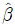
의 표준오차를 가장 작게 하는가?- 0,1,2,3,4,5
- 2,2,2,3,3,3
- 0,0,0,5,5,5
- 2,3,3,4,4,5
(정답률: 알수없음)
63. 다중회귀분석의 변수선택법에 대한 설명으로 옳은 것은?
- 전진선택법은 완전모형부터 시작한다.
- 후진제거법은 완전모형에서 시작한다.
- 단계적선택법은 후진제거법을 기준으로 실행한다.
- 단계적선택법은 완전모형에서 출발한다.
(정답률: 알수없음)
64. 직분사엔진(X) 자동차를 구매한 8명과 일반엔진(Y) 자동차를 구매한 12며에게 구매후 2년간의 차량유지비(USD)를 조사하였다. 그 결과는 다음 표와 같다.
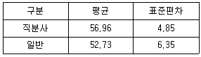
직분사엔진과 일반엔진의 차량유지비 차이의 가설검정에 관한 설명으로 틀린 것은?
- 귀무가설 : 두 엔진의 평균 차량유지비는 같다.
- 공동분산은 33.789 이다.
- 검정통계량의 값은 tα/2와 비교한다.
- 자유도는 19 이다.
(정답률: 알수없음)
65. 다음 중 여러 집단(2집단 이상)의 모평균의 동일성을 검정하는 통계적 방법은?
- 회귀분석
- 요인분석
- 주성분분석
- 분산분석
(정답률: 알수없음)
66. 다음 중 군집분석방법에 관한 설명으로 틀린 것은?
- 군집분석에서는 변수의 선택이 중요한 문제이므로 회구분석에서처럼 의미가 없는 변수를 제거하는 것이 군집 분석의 첫단계이다.
- 군집분석에서는 최종결과에 대한 통계적 유의성을 검정할 수 없다.
- 군집분석방법은 다양한 특성을 지닌 관찰대상의 유사성을 바탕으로 동질적인 집단으로 분류하는데 쓰이는 기법이다.
- 군집분석의 목적은 주어진 다수의 관측개체를 소수의 그룹으로 나눔으로써 대상 집단을 이해하고 군집을 효율적으로 활용하고자 하는 것이다.
(정답률: 알수없음)
67. 정규분포를 따르는 집단의 모평균의 값에 대하여 H0 : μ = 20, μ ≠ 20을 세우고 표본 25개의 평균을 구한 결과
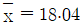
를 얻었다. 모집단의 표준편차를 5라고 할 때 다음 확률값을 이용하여 구한 유의확률(p-value)은? (단, Z는 표준화정규 확률변수를 나타낸다.)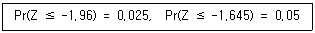
- 0.0125
- 0.025
- 0.⑤
- 0.975
(정답률: 알수없음)
68. 다음 분산분석표에서 F-r 검정을 위한 검전통계량의 값은?
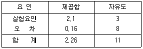
- 0.02
- 0.7
- 13.125
- 35
(정답률: 알수없음)
69. 단순선형회귀모형 yi = α + βxi + εi(i = 1, 2, …, )에서 잔차
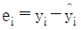
의 성질에 관한 옳은 설명을 모두 고른 것은? (단, εi는 서로 독립이고 평균 0, 분산 σ2인 확률변수이고,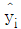
은 최소제곱추정값이다.)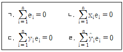
- ㄱ, ㄴ
- ㄷ, ㄹ
- ㄱ, ㄴ, ㄹ
- ㄱ, ㄴ, ㄷ, ㄹ
(정답률: 알수없음)
70. 다중공선성(multicollinearity)을 진단하는 측도가 아닌 것은?
- Durbin-Watson 통계량
- 분산팽창계수(VIF)
- 조건지수(condition indices)
- 분산분해비율(variance decomposition proportion)
(정답률: 알수없음)
71. 4개 브랜드(B)에 대한 10개 수퍼마켓(S)별 매출액의 차이를 분석하였다. 다음 분산분석표의 값으로 틀린 것은? (단, 전체자료에 대해 평균의 분산은 각각 245900, 17.963 이다.)
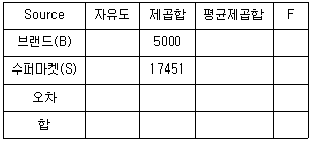
- 오차의 자유도는 27 이다.
- 오차의 제곱합은 485 이다.
- 브랜드에 대한 F-값은 92.8 이다.
- 수퍼마켓에 대한 F-값은 103.3 이다.
(정답률: 알수없음)
72. 25명의 주부를 대상으로 새로 개발된 전자제품을 일주일동안 사용하도록 한 후, 사용전·후의 구입의사를 조사한 결과이다. 구입의사에 변화가 있는지에 대한 비모수적 검정방법으로 옳은 것은?
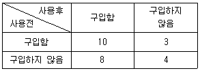
- 런(Runs)검정
- 맥네마르(McNemar)검정
- 켄달의 일치계수검정
- 카이제곱 동질성검정
(정답률: 알수없음)
73. 다음의 내용들이 설명하는 통계적 분석방법은?
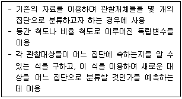
- 상관분석
- 분산분석
- 군지분석
- 판별분석
(정답률: 알수없음)
74. 요인 A에 대한 일원배치법 모수모형(fixed model)의 통계적 모형은 Yij = μ + ai + εij(i = 1, 2, …, k ; j = 1, 2, …, n)이다. 분산분석을 위한 조건에 대한 설명으로 옳지 않은 것은?
- Yij는 정규분포 N(μ, σ2)을 따른다.
- 오차항 εij는 정규분포 N(0, σ2)을 따른다.
- 총 실험 횟수로 kn회를 한다면 랜덤하게 실시되어야 한다.
- 각 처리의 반복수가 같지 않아도 분산분석을 할 수 있다.
(정답률: 알수없음)
75. 어떤 설문조사에서 50대의 남자 100명에게 현재의 결혼상태를 물어본 결과 다음고 ㅏ같은 표를 얻었다. 50대 남자의 결혼상태의 비율이 모두 동일하다고 할 수 있는지를 유의수준 0.⑤에서 검정하고자 할 때, 귀무가설과 검정통계량의 값, 그리고 귀무가설 기각여부를 바르게 나타낸 것은? (단, χ24, 0.⑤ = 9.488, χ25, 0.⑤ = 11.070)
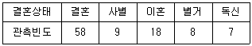
- 귀무가설 : 50대 남자의 결혼상태별 비율은 모두 동일하다. χ2 = 94.1, 기각여부 : 기각)
- 귀무가설 : 50대 남자의 결혼상태별 비율은 모두 동일하지 않다. χ2 = 94.1, 기각여부 : 채택)
- 귀무가설 : 50대 남자의 결혼상태별 비율은 모두 동일하다. χ2 = 4.71, 기각여부 : 기각)
- 귀무가설 : 50대 남자의 결혼상태별 비율은 모두 동일하지 않다. χ2 = 4.71, 기각여부 : 채택)
(정답률: 알수없음)
76. t-분포와 F-분포의 성질에 대한 설명으로 옳은 것은?
- 자유도가 k인 t-분포의 제곱은 F(k, 1)분포와 동일하다.
- F1-α(k1, k2) = 1/Fα(k2, k1)이 성립한다.
- t-분포와 F-분포는 통상적으로 오른쪽으로 꼬리가 긴 분포이다.
- Z~N(0, 1), V~χ2(r)이고, Z와 V가 독립일 때, Z/√V는 자유도가 r인 t-분포를 따른다.
(정답률: 알수없음)
77. 어떤 고교의 흡연자 비율을 추정하려고 한다. 95%의 확신을 갖고 추정오차가 0.⑤ 이내가 되도록 하려고 할 때, 필요한 최소의 표본크기는 얼마인가? (단, 근처 고교의 예로 보아 흡연자 비율은 0.3 정도일 것으로 예상된다.)
- 323
- 337
- 542
- 1000
(정답률: 알수없음)
78. 요인분석의 공통성(Communality)에 관한 설명으로 옳은 것은?
- 각 변수에서 분산 중 공통요인들에 의해 설명되는 부분을 의미한다.
- 각 변수의 중요도를 의미한다.
- 각 변수를 요인들로 회귀했을 때의 결정계수를 의미한다.
- 변수와 요인과의 상관계수를 나타낸다.
(정답률: 알수없음)
79. 다음 중 비계층적 군집분석 방법으로 개체수가 많은 경우에도 유용하게 이용되는 방법은?
- 최단연결법
- 최장연결법
- 평균연결법
- K-평균 군집방법
(정답률: 알수없음)
80. 평균이 μ이고 분산이 64인 분포에서 크기 25인 확률표본의 평균을
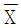
라고 하자. 이때 표본의 평균은 67.50 이라 하면, 모평균 μ에 대한 95% 신뢰구간으로 다음 중 옳은 것은? (단, Z0.025 = 1.96, Z0.⑤ = 1.645 이다.)- (63.36, 71.64)
- (64.36, 70.64)
- (60.50, 74.50)
- (63.50, 71.50)
(정답률: 알수없음)
81. 반복이 있는 이원배치에서 A, B 두 인자의 교호작용의 유무에 대한 가설검정을 교호작용의 평균제곱과 잔차에 대한 평균제곱의 비로 검정하고자 한다. 이 때 이용되는 F분포의 두 자유도로 옳은 것은? (단, A인자의 수는 p, B인자의 수는 q, 반복수는 r 이다.)
- pq, (p-1)(q-1)(r-1)
- pq, pq(r-1)
- (p-1)(q-1), (p-1)(q-1)(r-1)
- (p-1)(q-1), pq(r-1)
(정답률: 알수없음)
82. 판별분석(discriminant analysis)에 관한 설명으로 틀린 것은?
- 판별분석은 집단 간 차이를 가장 의미 있게 설명하기 위한 판별식을 찾는 것으로 집단간 분산을 집단 내 분산으로 나눈 비율을 사용한다.
- 판별식이 의미가 있는지의 여부에 대한 검정은 그룹간의 변동을 표한하는 통계량인 Wiks A 통계량을 이용한다.
- 판별분석은 회귀분석과 같이 독립변수의 추가여부에 대해 부분 F 검정을 이용하여 변수의 추가여부를 결정한다.
- 판별분석에서 Wiks A 통계량이 0에 가까울수록 그룹 간에 차가 없을을 나타낸다.
(정답률: 알수없음)
83. 최우추정량(maximum likelihood estimator)에 대한 설명으로 틀린 것은?
- 유일(unique)하게 존재한다.
- 점근적으로 불편성을 만족한다.
- 점근적으로 정규분포를 따른다.
- 불변성(ivariance)을 가진다.
(정답률: 알수없음)
84. 같은 종류의 강판을 제조하는 두 대의 기계가 있다. 각각의 기계가 만들어 내는 강판의 두께는 정규분포를 따른다. 이 두 대의 기계가 제조하는 강판을 표본으로 하여 어느 기계가 강판의 두께를 일정하게 만드는지에 대해 가설감정 할 때 쓰이는 검정통계량 분포는?
- 정규분포
- t분포
- 카이제곱분포
- F분포
(정답률: 알수없음)
85. 어떤 회사의 분기별 매출액이 다음과 같다.
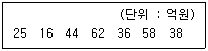
이 회사의 분기별 매출액이 35억원보다 많다고 할 수 있는지를 비모수 방법으로 부호검정을 하고자 한다. 이 때 검정통계량의 값과 사용되는 검정통계량의 분포는?
- S = 4, 검정통계량의 분포 = 정규분포
- S = 5, 검정통계량의 분포 = 정규분포
- S = 4, 검정통계량의 분포 = 이항분포
- S = 5, 검정통계량의 분포 = 이항분포
(정답률: 알수없음)
86. 20대 여성 10명의 발사이즈(X : mm)에 따른 키(Y : cm)의 관계를 알아보고자 한다. 측정결과의 평균과 분산은 각각
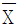
= 234.5,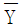
= 157.2, s2X = 5.8, s2Y = 47.5, sXY = 4.62 이다. 회귀분석 결과로 틀린 것은?- 절편 : -29.59
- 기울기 : 0.80
- 결정계수 : 0.08
- 총분산 : 27.55
(정답률: 알수없음)
87. 광고가 판매량에 미치는 영향을 분석하기 위해, 특수한 종류의 상품을 판매하는 10개의 상점을 표본으로 추출하였다. 이 상점들로부터 조사한 연간 광고료와 총판매량이 다음과 같다.
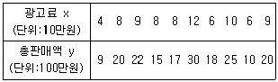
위 자료를 정리한 다음의 결과를 이용하여 회귀식
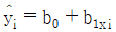
의 회귀계수를 구하면?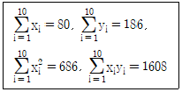
- b0 = -2.272, b1 = 2.609
- b0 = 2.272, b1 = 2.030
- b0 = 2.272, b1 = 2.609
- b0 = -2.272, b1 = 1.233
(정답률: 알수없음)
88. 다중회귀분석에서 독립변수들 사이에 높은 상관관계가 존재하는 다중공선성에 대한 설명으로 틀린 것은?
- 다중공선성이 존재할 때는 추정량이 정도를 높이기 위해 편의추정량(biased estimator)을 사용할 수 있다.
- 분산팽창계수(variance inflation factor : VIF)의 값으로 다중공선성의 존재를 파악한다.
- Cook의 D 통계량, DFFITS, DFBETAS 등은 다중공선성의 존재여부를 판별하는데 유용하게 사용되는 통계량이다.
- 다중공선성이 존재할 때 표본의 수를 증가시키는 것도 이를 해결하기 위한 한 가지 방안이다.
(정답률: 알수없음)
89. 다음은 우울증환자들과 보통사람들 294명의 자료를 기반으로 판별분석모형을 개발하여 구한 분류표이다. 이 판별모형의 정확도와 오분류율을 구하면?
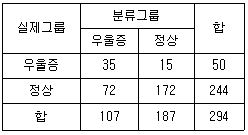
- 정확도 =
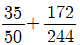
, 오분류율 =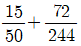
- 정확도 =
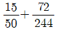
, 오분류율 =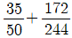
- 정확도 =
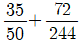
, 오분류율 =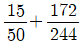
- 정확도 =
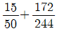
, 오분류율 =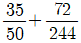
(정답률: 알수없음)
90. 다중선형회귀분석에서 독립변수(설명변수)가 여러 개 있는 경우에는 회귀모형설정에 꼭 필요한 독립변수를 선택하여 사용하는 것이 바람직하다. 다음 중 이러한 변수선택법이 아닌 것은?
- 단계선택법
- 전진선택법
- 후진제거법
- 임의선택법
(정답률: 알수없음)
91. 두 확률변수 X1, X2의 공분산행렬이
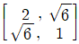
일 때, 두 주성분 중 전체 변이를 설명하는 비율이 큰 것은?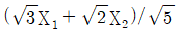
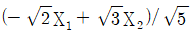
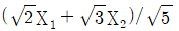
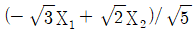
(정답률: 알수없음)
92. X1, …, Xn을 중앙값이 m인 분포에서의 확률표본이라고 할 때, H0 : m = m0를 검정하는 비모수 검정법으로 부호순위 검정법이 흔히 쓰인다. 다음 데이터에서 m0 = 63이라고 할 때, 부호순위 검정통계량의 값은?
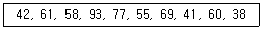
- 17
- 18
- 19
- 20
(정답률: 알수없음)
93. 모비율의 추정에서 표본 크기의 결정에 관한 설명으로 틀린 것은?
- 오차한계가 일정크기 이상이 되도록 표본의 수를 정한다.
- 표본의 수는 신뢰수준 (1-α)에 따라 달라진다.
- 모비율(p)에 대한 정보가 없는 경우에는 p를 1/2로 가정하고 표본의 크기를 정한다.
- 오차한계를 크게 정할수록 표본의 수는 줄어든다.
(정답률: 알수없음)
94. “부모의 애정표현정도가 자녀의 자존감에 영향을 주고, 부모의 애정표현정도와 자녀의 자존감이 자녀의 학교생활 만족도에 영향을 준다”는 세 개의 구인(construct)간의 인과관계모형에서 내생적 구인 또는 내생적 변수를 모두 고른 것은?
- 부모의 애정표현, 자녀의 자존감
- 부모의 애정표현
- 자녀의 자존감, 자녀의 학교생활 만족도
- 자녀의 학교생활 만족도
(정답률: 알수없음)
95. 두 가지 방법 A, B의 효과를 비교하기 위해 150명을 대상으로 조사하였다. 80명에게는 A방법을, 나머지 70명은 B방법을 적용하여 얼마의 시간이 흐른 후 A와 B방법 각각에 대하여 효과를 동일한 기준의 상, 중, 하로 나누어 표본을 조사하였다. 다음 중 가장 타당성 있는 검정 방법은?
- 카이제곱 검정
- 쌍 비교 혹은 대응비교 검정
- 시계열 검정
- 두 효과 A, B의 모평균 차이에 대한 검정
(정답률: 알수없음)
96. 분산이 4로 알려진 정규분포를 따르는 집단에서 크기가 25인 표본을 추출하였다. 이 때, 모평균 μ에 대한 가설 H0 : μ = 0와 H1 : μ ≠ 0을 유의수준 α = 0.⑤에서 검정한다면, H0의 기각역은 어떻게 주어지는가? (단, z0.025의 값은 2로 계산하시오.)
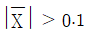
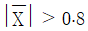
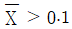
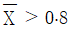
(정답률: 알수없음)
97. 연속형 확률변수 X의 중앙값(median) θ에 대하여 부호검정(sign test)을 이용하여 알아보고자 한다. 귀무가설 H0 : θ = θ0에 대하여, 크기 n인 랜덤샘플 X1, X2, …, Xn 중 θ0보다 큰 자료의 수를 S라 할 때, 다음 중 옳지 않은 것은?
- 대립가설이 H1 : θ ＞ θ0 일 때, 기각역의 형태는 S ≥ a이다.(단, a는 유의수준에 따라 결정되는 적절한 상수이다.)
- 대립가설이 H1 : θ ＜ θ0 일 때, 기각역의 형태는 S ≤ a이다.(단, a는 유의수준에 따라 결정되는 적절한 상수이다.)
- 대립가설이 H1 : θ ≠ θ0 일 때, 기각역의 형태는 |S-θ0| ≥ a이다.(단, a는 유의수준에 따라 결정되는 적절한 상수이다.)
- 대립가설이 H1 : θ ＞ θ0 일 때, 기각역의 형태는 S ≥ a라면, 같은 유의수준에서 대립가설 H1 : θ ＞ θ0에 e한 기각역은 S ≤ n-a 이다.
(정답률: 알수없음)
98. 모비율추정에 필요한 표본의 크기를 구할 때 최대추정오차,
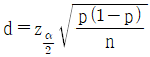
을 n에 대해 정리하면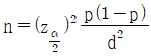
가 된다. 만약 모비율 p에 대한 사전 정보가 없다면 표본의 크기를 구하기 위해 어떤 값을 이용해야 하는가?- p = 0.25
- p = 0.5
- p = 0.75
- p = 1
(정답률: 알수없음)
99. 다음은 에어콘을 제조하는 다섯 회사에 대하여 품질과 가격을 조사한 순위(rank)자료이다. 품질과 가격의 스피어만 상관계수를 구하면?
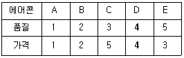
- 0.4
- 0.5
- 0.6
- 0.7
(정답률: 알수없음)
100. 반응변수 Y가 (0, 1)중 하나를 택하는 이분형일 때, P개의 설명변수 x의 선형결합식을 Y가 1일 확률 (Pr(Y=1))의 범위를 벗어나지 않도록 다음과 같이 변환한 식을 사용하는 회귀분석은?
- 일반화 회귀분석
- 다항 회귀분석
- 로지스틱 회귀분석
- 로버스트 회귀분석
(정답률: 알수없음)